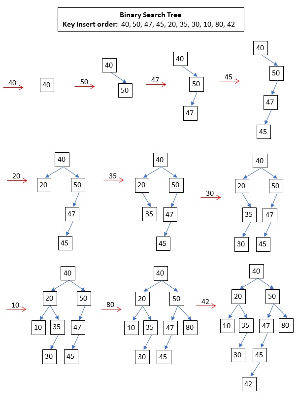

Class BinarySearchTreeTests
Tests methods of BinarySearchTreeBase<TKey, TValue> class.
Inheritance
Inherited Members
Namespace: CSFundamentalsTests.DataStructures.Trees.Binary
Assembly: CSFundamentalsTests.dll
Syntax
[TestClass]
public class BinarySearchTreeTestsMethods
| Improve this Doc View SourceBuild_ExpectsCorrectBinaryTree()
For a step by step transition of the BST while inserting these keys, see .
Declaration
[TestMethod]
public void Build_ExpectsCorrectBinaryTree()Delete_MultipleNodesConsecutively_ExpectsCorrectBinarySearchTreeAfterEachStep()
Tests the correctness of delete operation when deleting all the keys in the tree one after the other in a random order. For a step by step transition of the BST while deleting these keys, see .
Declaration
[TestMethod]
public void Delete_MultipleNodesConsecutively_ExpectsCorrectBinarySearchTreeAfterEachStep()Delete_NodeWith2Children_ExpectsReplacementWithImmediateSuccessorKey50()
Tests the correctness of delete operation when deleting a node with 2 children.
Declaration
[TestMethod]
public void Delete_NodeWith2Children_ExpectsReplacementWithImmediateSuccessorKey50()Delete_NodeWithNoChildren()
Tests the correctness of delete operation when deleting a node with no children.
Declaration
[TestMethod]
public void Delete_NodeWithNoChildren()Delete_NodeWithOneChildren_ExpectsReplacementByLeftChild()
Tests the correctness of delete operation when deleting a node with one child.
Declaration
[TestMethod]
public void Delete_NodeWithOneChildren_ExpectsReplacementByLeftChild()Delete_NotExistingKey_ExpectsNoAlternationInTree()
Tests the correctness of delete operation when deleting a non existing key from the tree.
Declaration
[TestMethod]
public void Delete_NotExistingKey_ExpectsNoAlternationInTree()Delete_Root_ExpectsReplacementByImmediateSuccessorKey42()
Tests the correctness of delete operation when deleting the root node.
Declaration
[TestMethod]
public void Delete_Root_ExpectsReplacementByImmediateSuccessorKey42()DeleteMax_InEntireTree_ExpectsToDelete80AndHave50AsNewMax()
Tests the correctness of delete max key operation
Declaration
[TestMethod]
public void DeleteMax_InEntireTree_ExpectsToDelete80AndHave50AsNewMax()DeleteMax_InLeftSubtreeOfRoot_ExpectsToDelete35AndHave30AsMinAtTheEnd()
Tests the correctness of delete max key operation
Declaration
[TestMethod]
public void DeleteMax_InLeftSubtreeOfRoot_ExpectsToDelete35AndHave30AsMinAtTheEnd()DeleteMin_InEntireTree_ExpectsToDelete10AndHave20AsNewMin()
Tests the correctness of delete min key operation
Declaration
[TestMethod]
public void DeleteMin_InEntireTree_ExpectsToDelete10AndHave20AsNewMin()DeleteMin_InRightSubtreeOfRoot_ExpectsToDelete42AndHave45AsMinAtTheEnd()
Tests the correctness of delete min key operation
Declaration
[TestMethod]
public void DeleteMin_InRightSubtreeOfRoot_ExpectsToDelete42AndHave45AsMinAtTheEnd()HasBinarySearchTreeProperties(BinarySearchTreeBase<Int32, String>, BinarySearchTreeNode<Int32, String>, Int32)
Checks whether the tree is a proper binary search tree.
Declaration
public void HasBinarySearchTreeProperties(BinarySearchTreeBase<int, string> tree, BinarySearchTreeNode<int, string> root, int expectedTotalKeyCount)Parameters
| Type | Name | Description |
|---|---|---|
| BinarySearchTreeBase<System.Int32, System.String> | tree | A binary search tree. |
| BinarySearchTreeNode<System.Int32, System.String> | root | The root node of the tree. |
| System.Int32 | expectedTotalKeyCount | Expected total number of keys in the tree. |
Initialize()
Initializes/Resets variables before executing each unit test in this class.
Declaration
[TestInitialize]
public void Initialize()